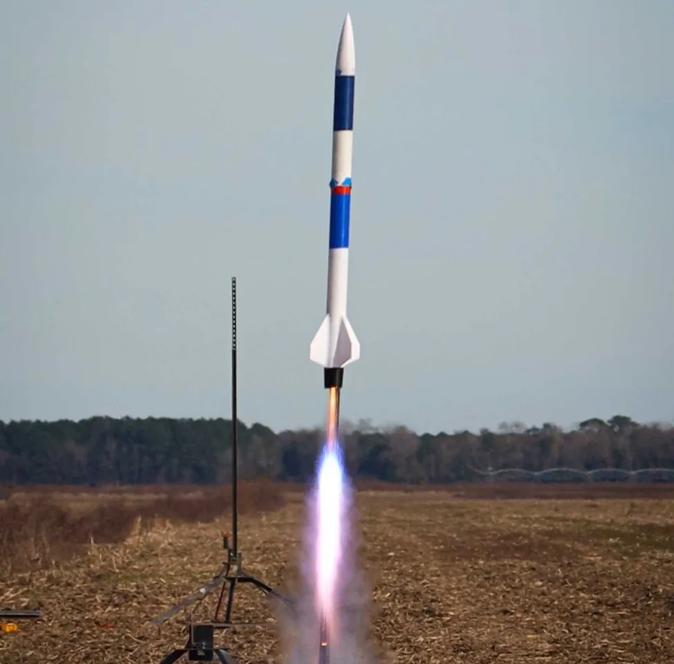
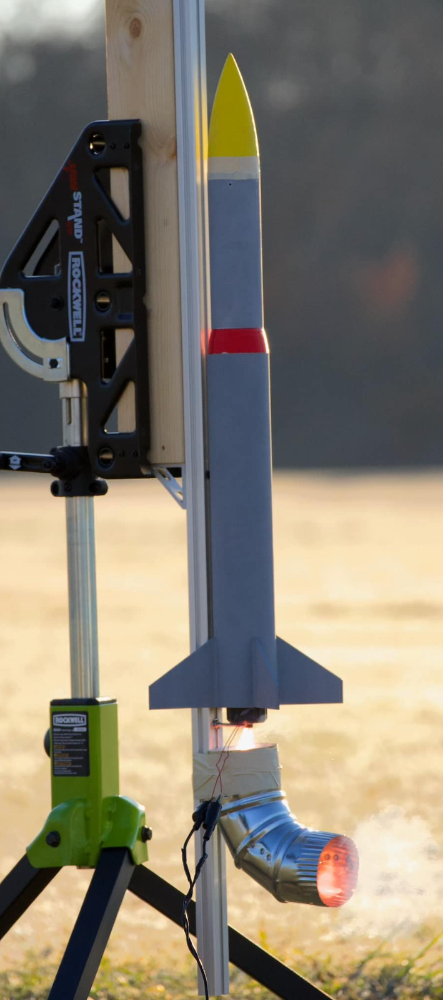
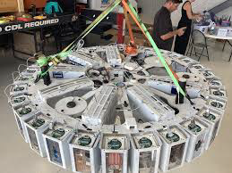
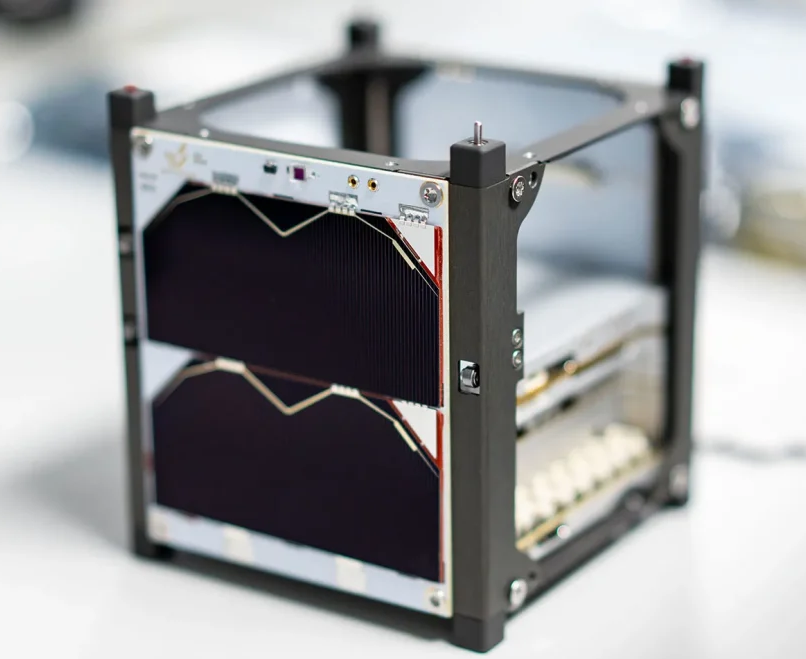

NASA Student Launch Initiative
An annual competition challenging students to design, build, and fly rockets with specific mission parameters.
- 2025 Participant
The American Rocketry Challenge
The world's largest intercollegiate rocket engineering competition.
- 2023 Top 10 Finish
- 2022 Technical Excellence Award
Nasa TechRise
The NASA TechRise Student Challenge empowers student teams to design, build, and launch experiments on NASA-supported test flights. With support from a dedicated educator, student teams from U.S. public, private, or charter schools have the exciting opportunity to design and propose their own scientific experiments for testing aboard a suborbital flight.
- 2024 Participant
NASA CubeSat Launch Initiative
NASA’s CubeSat Launch Initiative provides opportunities for CubeSats built by U.S. educational institutions, and non-profit organizations, including informal educational institutions such as museums and science centers to fly on upcoming launches.
- 2025 Participant